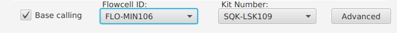

Base Calling Settings¶
recursive [2] (Default)¶
Note
- Set value: search for input files recursively.
| [1] | Guppy v3.0.3 Release https://community.nanoporetech.com/posts/guppy-3-0-release |
| [2] | (1, 2, 3, 4) How to configure Guppy parameters https://community.nanoporetech.com/protocols/Guppy-protocol-preRev/v/gpb_2003_v1_revg_14dec2018/how-to-configure-guppy-parameters |